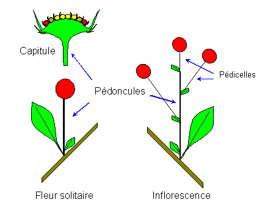
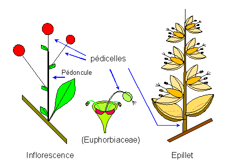
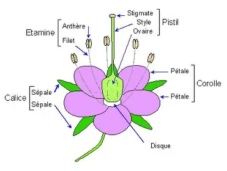

Axe qui supporte une inflorescence ou une fleur solitaire.

Axe qui supporte chaque fleur dans une inflorescence. Chez certaines Euphorbiaceae, axe qui supporte directement l'ovaire, seul élément de la fleur femelle.

Ensemble des tépales (pétales + sépales indiférenciés)
Ensemble du style et stigmates. Partie femelle de la fleur.
